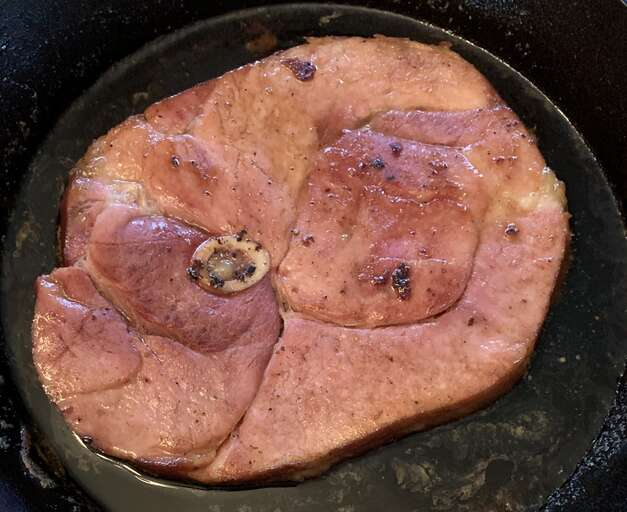

Brown Sugar Ham Steak

A sweet ham steak recipe. Pairs great with roasted potatoes and green beans.
Ingredients
- 1 (8 ounce) bone-in fully cooked ham steak
- 5 tablespoons butter, cubed
- 5 tablespoons brown sugar
Steps
- Cook ham steak in a large skillet over medium heat until browned, 3 to 4 minutes per side.
- Remove ham from skillet; drain off any fat.
- Melt butter in the same skillet over medium-low heat. Stir in brown sugar.
- Return ham to skillet. Cook, turning ham often, until heated through and brown sugar has dissolved, about 10 minutes. Reduce heat if brown sugar/butter mixture starts to pop or splatter.
Main Recipe Page